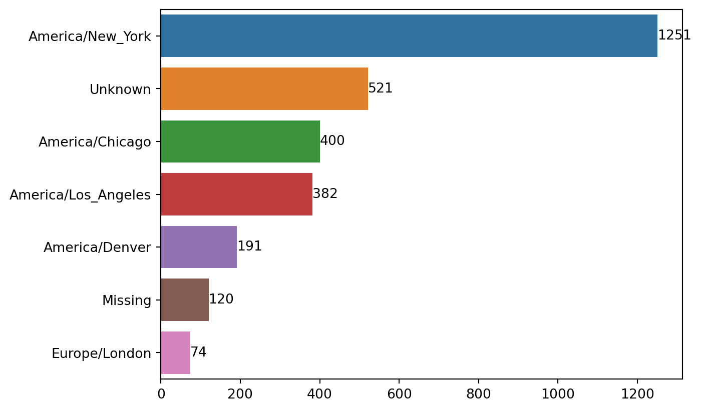
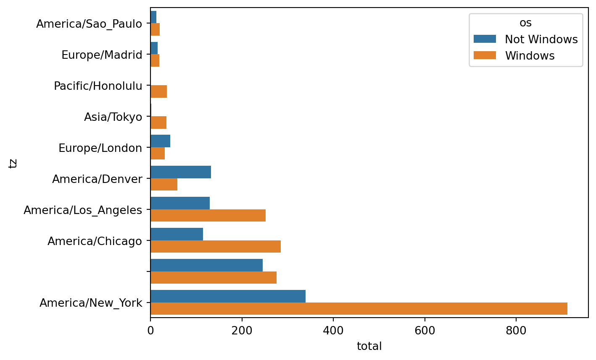

Analysis techniques using pandas - Python for Data Analysis, 3E by Wes McKinney
Python
pandas
analaysis
Learning notes - Python for Data Analysis, 3E - Wes McKinney
Published
October 25, 2023
import json# Set path to data file and check data contentpath ="../data/bitly_usagov/example.txt"withopen(path) as f:print(f.readline())# Convert json data to a list of dictionarieswithopen(path) as f: records = [json.loads(line) for line in f]records[0]
Count Time Zones - ‘tz’ field using Standard libraries
# Number of dictionary items in the listprint("Number of entries from records: "+str(len(records)))# Unique time zones (tz) from the list#time_zones = [rec["tz"] for rec in records] # KeyError, Not all record has 'tz' fieldtime_zones = [rec["tz"] for rec in records if"tz"in rec]time_zones[:10]
# Get count of time zone using a functiondef get_counts(sequence): counts = {}for x in sequence:if x in counts: counts[x] +=1else: counts[x] =1return counts# Get count of time zone using tools in Python standard libraryfrom collections import defaultdictdef get_counts2(sequence): counts = defaultdict(int) # init to 0 by default for new keyfor x in sequence: counts[x] +=1return counts
# Get 'tz' count using the functionscounts = get_counts(time_zones)#countscounts["America/New_York"]len(time_zones)
3440
# Create a function to list of top 10 time zones in tuples by (count, timezone) and sort itdef top_counts(count_dict, n=10): value_key_pairs = [(count, tz) for tz, count in count_dict.items()] value_key_pairs.sort()return value_key_pairs[-n:]
import pandas as pdimport numpy as np# Create a DataFrame with the json data amd summary viewframe = pd.DataFrame(records)frame.info()# First 5 of 'tz'frame["tz"].head()
<class 'pandas.core.frame.DataFrame'>
RangeIndex: 3560 entries, 0 to 3559
Data columns (total 18 columns):
# Column Non-Null Count Dtype
--- ------ -------------- -----
0 a 3440 non-null object
1 c 2919 non-null object
2 nk 3440 non-null float64
3 tz 3440 non-null object
4 gr 2919 non-null object
5 g 3440 non-null object
6 h 3440 non-null object
7 l 3440 non-null object
8 al 3094 non-null object
9 hh 3440 non-null object
10 r 3440 non-null object
11 u 3440 non-null object
12 t 3440 non-null float64
13 hc 3440 non-null float64
14 cy 2919 non-null object
15 ll 2919 non-null object
16 _heartbeat_ 120 non-null float64
17 kw 93 non-null object
dtypes: float64(4), object(14)
memory usage: 500.8+ KB
# Substitue empty strings or missing data in "tz", get ready for visualizationclean_tz = frame["tz"].fillna("Missing") # substitue missing dataclean_tz[clean_tz ==""] ="Unknown"tz_counts = clean_tz.value_counts()tz_counts.head(12)tz_counts.tail(12)
# Plot the tz count dataimport seaborn as snsimport matplotlib.pyplot as pltplt.clf()subset = tz_counts.head(7)sns.barplot(y=subset.index, x=subset.to_numpy())for i, v inenumerate(subset.to_numpy()): plt.text(v, i, str(v), va='center', fontsize=10, color='black')plt.show()

The “a” field, the user agent string: Information about the browser, device, or application used to perform the URL shortening service with Bitly
frame.info()frame["a"] # all entries under "a" fieldframe["a"][1] # second entry in "a" fieldframe["a"][50] # 51th entry in "a" fieldframe["a"][51] # 52nd very long entry in "a" fieldframe["a"][51][:50] # 50 characters only for the 52nd entry
<class 'pandas.core.frame.DataFrame'>
RangeIndex: 3560 entries, 0 to 3559
Data columns (total 18 columns):
# Column Non-Null Count Dtype
--- ------ -------------- -----
0 a 3440 non-null object
1 c 2919 non-null object
2 nk 3440 non-null float64
3 tz 3440 non-null object
4 gr 2919 non-null object
5 g 3440 non-null object
6 h 3440 non-null object
7 l 3440 non-null object
8 al 3094 non-null object
9 hh 3440 non-null object
10 r 3440 non-null object
11 u 3440 non-null object
12 t 3440 non-null float64
13 hc 3440 non-null float64
14 cy 2919 non-null object
15 ll 2919 non-null object
16 _heartbeat_ 120 non-null float64
17 kw 93 non-null object
dtypes: float64(4), object(14)
memory usage: 500.8+ KB
# Split off the first token of the string to the use agent information and make another summary of the new dataset# Create a Series with first tokens only from the target stringresults = pd.Series([x.split()[0] for x in frame["a"].dropna()], name="user_agents")results.head(12)print("-"*40)results.value_counts().head(12)
# Decompose the top time zones into Windows and non-Windws users# Create a new DF by excluding the entries missing agents info.cframe = frame[frame["a"].notna()].copy()cframe.info()cframe.head()# Compute on each entry for the containment of string "Windows", and create a column 'os' to identify the result.cframe["os"] = np.where(cframe["a"].str.contains("Windows"), "Windows", "Not Windows")cframe["os"].head(5) # Group the data by "tz" and "os", and get countsby_tz_os = cframe.groupby(["tz", "os"])agg_counts = by_tz_os.size().unstack().fillna(0) # anlogous to value_counts()agg_counts.head()
<class 'pandas.core.frame.DataFrame'>
Int64Index: 3440 entries, 0 to 3559
Data columns (total 18 columns):
# Column Non-Null Count Dtype
--- ------ -------------- -----
0 a 3440 non-null object
1 c 2919 non-null object
2 nk 3440 non-null float64
3 tz 3440 non-null object
4 gr 2919 non-null object
5 g 3440 non-null object
6 h 3440 non-null object
7 l 3440 non-null object
8 al 3094 non-null object
9 hh 3440 non-null object
10 r 3440 non-null object
11 u 3440 non-null object
12 t 3440 non-null float64
13 hc 3440 non-null float64
14 cy 2919 non-null object
15 ll 2919 non-null object
16 _heartbeat_ 0 non-null float64
17 kw 93 non-null object
dtypes: float64(4), object(14)
memory usage: 510.6+ KB
os
Not Windows
Windows
tz
245.0
276.0
Africa/Cairo
0.0
3.0
Africa/Casablanca
0.0
1.0
Africa/Ceuta
0.0
2.0
Africa/Johannesburg
0.0
1.0
# Select top overall time zones# Get counts on across columns and sorted indices for the rowssorted_indices = agg_counts.sum("columns").argsort() # total across columns and get sorted indices for sorting latersorted_indices.values[:10] # check the first 10 sorted indices in an array# Get the largest 10 rows in total of Not Windows + Windowscount_subset = agg_counts.take(sorted_indices[-10:]) # Extract using indices# Or use pandas nlargestagg_counts.sum(axis="columns").nlargest(10)
Plot the result with grouped barplot using seaborn
def print_tl(x):print(x, "\n", type(x), "\"\n--------------------------------")# Reset the index for the final DF to rearrange the data for better compatibility with seaboncount_subset = count_subset.stack() # Series by reshaping DF from wide to long format, pivoting the columns, also creating multiindexprint_tl(count_subset)count_subset.name ="total"# Name the Series objprint_tl(count_subset)count_subset = count_subset.reset_index() # 'tz' not an index anymore, Series to DFprint_tl(count_subset)count_subset.head(10)count_subset.info()# plot stacked barplotimport matplotlib.pyplot as pltimport seaborn as snsplt.clf()sns.barplot(x="total", y="tz", hue="os", data=count_subset)plt.show()
tz os
America/Sao_Paulo Not Windows 13.0
Windows 20.0
Europe/Madrid Not Windows 16.0
Windows 19.0
Pacific/Honolulu Not Windows 0.0
Windows 36.0
Asia/Tokyo Not Windows 2.0
Windows 35.0
Europe/London Not Windows 43.0
Windows 31.0
America/Denver Not Windows 132.0
Windows 59.0
America/Los_Angeles Not Windows 130.0
Windows 252.0
America/Chicago Not Windows 115.0
Windows 285.0
Not Windows 245.0
Windows 276.0
America/New_York Not Windows 339.0
Windows 912.0
dtype: float64
<class 'pandas.core.series.Series'> "
--------------------------------
tz os
America/Sao_Paulo Not Windows 13.0
Windows 20.0
Europe/Madrid Not Windows 16.0
Windows 19.0
Pacific/Honolulu Not Windows 0.0
Windows 36.0
Asia/Tokyo Not Windows 2.0
Windows 35.0
Europe/London Not Windows 43.0
Windows 31.0
America/Denver Not Windows 132.0
Windows 59.0
America/Los_Angeles Not Windows 130.0
Windows 252.0
America/Chicago Not Windows 115.0
Windows 285.0
Not Windows 245.0
Windows 276.0
America/New_York Not Windows 339.0
Windows 912.0
Name: total, dtype: float64
<class 'pandas.core.series.Series'> "
--------------------------------
tz os total
0 America/Sao_Paulo Not Windows 13.0
1 America/Sao_Paulo Windows 20.0
2 Europe/Madrid Not Windows 16.0
3 Europe/Madrid Windows 19.0
4 Pacific/Honolulu Not Windows 0.0
5 Pacific/Honolulu Windows 36.0
6 Asia/Tokyo Not Windows 2.0
7 Asia/Tokyo Windows 35.0
8 Europe/London Not Windows 43.0
9 Europe/London Windows 31.0
10 America/Denver Not Windows 132.0
11 America/Denver Windows 59.0
12 America/Los_Angeles Not Windows 130.0
13 America/Los_Angeles Windows 252.0
14 America/Chicago Not Windows 115.0
15 America/Chicago Windows 285.0
16 Not Windows 245.0
17 Windows 276.0
18 America/New_York Not Windows 339.0
19 America/New_York Windows 912.0
<class 'pandas.core.frame.DataFrame'> "
--------------------------------
<class 'pandas.core.frame.DataFrame'>
RangeIndex: 20 entries, 0 to 19
Data columns (total 3 columns):
# Column Non-Null Count Dtype
--- ------ -------------- -----
0 tz 20 non-null object
1 os 20 non-null object
2 total 20 non-null float64
dtypes: float64(1), object(2)
memory usage: 612.0+ bytes

Improve the plot for better comparison in relative percentage of Windows users in the smaller groups
# Change the plot to improve the visuals for easier comparison in samller groups of Windows usersdef print_tl(x=None):if x isNone:print("\n -----------------------------")else:print(x, "\n", type(x), "\n -----------------------------")# Funcion to calculate and add normalize the group percentage, group sum to 1def norm_total(group): group["normed_total"] = group["total"] / group["total"].sum()return group# Create a Df normalized by the functionprint_tl(count_subset)grouped_by_tz = count_subset.groupby("tz")# Iterate the grouped datafor group_name, group_data in grouped_by_tz:print(f"Group Name: {group_name}")print(group_data)print_tl()# Apply normalization to each group in tz (time zone)results = count_subset.groupby("tz", group_keys=False).apply(norm_total)print_tl(results)# Another approach using pandas aggregation and broadcasting methodg = count_subset.groupby("tz")results2 = count_subset["total"] / g["total"].transform("sum")print_tl(results2)# Plot barplot with normalized count dataplt.clf()sns.barplot(x="normed_total", y="tz", hue="os", data=results)plt.show()
tz os total
0 America/Sao_Paulo Not Windows 13.0
1 America/Sao_Paulo Windows 20.0
2 Europe/Madrid Not Windows 16.0
3 Europe/Madrid Windows 19.0
4 Pacific/Honolulu Not Windows 0.0
5 Pacific/Honolulu Windows 36.0
6 Asia/Tokyo Not Windows 2.0
7 Asia/Tokyo Windows 35.0
8 Europe/London Not Windows 43.0
9 Europe/London Windows 31.0
10 America/Denver Not Windows 132.0
11 America/Denver Windows 59.0
12 America/Los_Angeles Not Windows 130.0
13 America/Los_Angeles Windows 252.0
14 America/Chicago Not Windows 115.0
15 America/Chicago Windows 285.0
16 Not Windows 245.0
17 Windows 276.0
18 America/New_York Not Windows 339.0
19 America/New_York Windows 912.0
<class 'pandas.core.frame.DataFrame'>
-----------------------------
Group Name:
tz os total
16 Not Windows 245.0
17 Windows 276.0
Group Name: America/Chicago
tz os total
14 America/Chicago Not Windows 115.0
15 America/Chicago Windows 285.0
Group Name: America/Denver
tz os total
10 America/Denver Not Windows 132.0
11 America/Denver Windows 59.0
Group Name: America/Los_Angeles
tz os total
12 America/Los_Angeles Not Windows 130.0
13 America/Los_Angeles Windows 252.0
Group Name: America/New_York
tz os total
18 America/New_York Not Windows 339.0
19 America/New_York Windows 912.0
Group Name: America/Sao_Paulo
tz os total
0 America/Sao_Paulo Not Windows 13.0
1 America/Sao_Paulo Windows 20.0
Group Name: Asia/Tokyo
tz os total
6 Asia/Tokyo Not Windows 2.0
7 Asia/Tokyo Windows 35.0
Group Name: Europe/London
tz os total
8 Europe/London Not Windows 43.0
9 Europe/London Windows 31.0
Group Name: Europe/Madrid
tz os total
2 Europe/Madrid Not Windows 16.0
3 Europe/Madrid Windows 19.0
Group Name: Pacific/Honolulu
tz os total
4 Pacific/Honolulu Not Windows 0.0
5 Pacific/Honolulu Windows 36.0
-----------------------------
tz os total normed_total
0 America/Sao_Paulo Not Windows 13.0 0.393939
1 America/Sao_Paulo Windows 20.0 0.606061
2 Europe/Madrid Not Windows 16.0 0.457143
3 Europe/Madrid Windows 19.0 0.542857
4 Pacific/Honolulu Not Windows 0.0 0.000000
5 Pacific/Honolulu Windows 36.0 1.000000
6 Asia/Tokyo Not Windows 2.0 0.054054
7 Asia/Tokyo Windows 35.0 0.945946
8 Europe/London Not Windows 43.0 0.581081
9 Europe/London Windows 31.0 0.418919
10 America/Denver Not Windows 132.0 0.691099
11 America/Denver Windows 59.0 0.308901
12 America/Los_Angeles Not Windows 130.0 0.340314
13 America/Los_Angeles Windows 252.0 0.659686
14 America/Chicago Not Windows 115.0 0.287500
15 America/Chicago Windows 285.0 0.712500
16 Not Windows 245.0 0.470250
17 Windows 276.0 0.529750
18 America/New_York Not Windows 339.0 0.270983
19 America/New_York Windows 912.0 0.729017
<class 'pandas.core.frame.DataFrame'>
-----------------------------
0 0.393939
1 0.606061
2 0.457143
3 0.542857
4 0.000000
5 1.000000
6 0.054054
7 0.945946
8 0.581081
9 0.418919
10 0.691099
11 0.308901
12 0.340314
13 0.659686
14 0.287500
15 0.712500
16 0.470250
17 0.529750
18 0.270983
19 0.729017
Name: total, dtype: float64
<class 'pandas.core.series.Series'>
-----------------------------